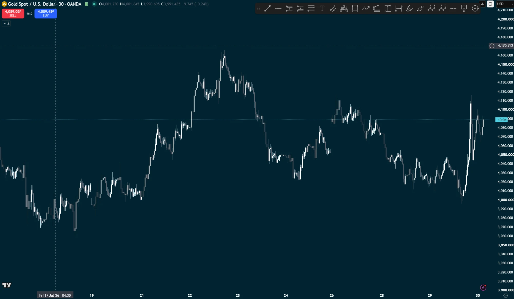

LIQ 4,165.7 swept high
LIQ 4,140 equal highs — taken
LIQ 4,116 equal highs
LIQ 4,050 equal lows shelf
LIQ 4,022 equal lows
LIQ 3,996 swept low
LIQ 3,968 swept low
0.382 4,102
0.5 4,083
0.618 4,063
0.786 4,035
FIB 3,999.8 → 4,165.7
impulse leg — fib measured off this
EVENING STAR
sweep of 4,140 highs
MORNING STAR
MORNING STAR
sweep of 4,015 lows → 4,116
MORNING STAR
SHORT 1 · entry 4,145
stop 4,167
target 4,063 = the 0.618 · 4.3:1
LONG 2 · entry 4,040
stop 4,020
target 4,080 hit · 2:1
LONG 3 · entry 4,014 ◀ best trade on the chart
stop 3,994
target 4,090 hit · 3.8:1 · then ran to 4,116
Gold spot · 30m · 17–30 Jul 2026
liquidity level — equal highs / lows
fib retracement (0.618 emphasised)
morning star — long reversal
evening star — short reversal
target zone / stop zone